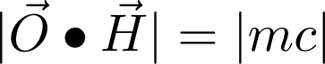

How AC Bias Really Works ... Maybe ...
(June 2012)
What is bias anyway? And why do we need it?
All magnetic recording is based on ferromagnetic materials becoming permanently magnetized
by an applied external magnetic field (perhaps due to an electrical signal in a coil of
wire).
These materials "remember" the magnetic field
that was applied to them in the past, and if they are later moved across something
that can sense magnetic fields (such as a coil of wire), their magnetic history
can be reproduced in the present (perhaps as an electrical signal).
Very few materials are ferromagnetic. Permanent
magnetism is due to the alignment of electron spins in
materials where those spins do not naturally cancel out. "Bulk" samples of ferromagnetic
material (e.g. steel wire) naturally organize themselves in to regions of consistent
electron spin alignment known as "domains". This tendency for large numbers of
electrons to align in the same way, but only over a limited volume, is brought about
by a thing called the "quantum mechanical exchange force" acting to minimize the
overall energy stored in the magnetic fields. A localized external magnetic field can change
the alignment of a small region of the material independent of neighbouring regions.
The first person to realize the potential of ferromagnetism for recording sound
was either Oberlin Smith in the U.S. or Wilhelm Hedic in the Netherlands both
in 1887/88. In Smith's case, his patent application was refused because it was
against all the known laws of magnetism! At that time, it was thought that magnetism
would spread throughout a material (like ink in water) until one end was a south pole
and the other north, with no possibility of localized regions retaining different levels
or directions of magnetization.
In 1894 Valdemar Poulsen demonstrated beyond
doubt that localized magnetization in steel wires existed and could be used to
record and reproduce electrical signals. This was regarded as quite miraculous at the time,
and was indeed revolutionary. Its importance in the history of technology
can hardly be overstated, and magnetic recording remains hugely important today.
Although tape may be close to dead now, magnetic disks
certainly are not. Their replacement by flash memory may be underway, but it will not
be complete for quite some time (probably not until the next decade I suspect - it is
mid 2012 at the time of writing).
The good thing about ferromagnetism is that it is a robust way of recording electrical
signals, potentially at very high information densities. As far as faithfully
recording and reproducing an analog signal goes, however, it leaves a lot to be
desired! The problem is that the magnetization retained by the material has a highly
non-linear relationship to the applied magnetizing field. Beyond simple non-linearity,
the magnetization an external field causes depends greatly on the previous magnetization
of the material. If you slowly increase the external field, then start to decrease it,
the resulting magnetization for a given field strength on the way down is not the
same as it was on the way up! This is known as hysteresis and is a fundamental
property of ferromagnetic materials due to the way domains organize themselves under
the control of the exchange force.
Magnetism in ferromagnetic materials is complicated. Many of the descriptions that follow
are simplified out of necessity (and my ignorance). For practical applications,
what we are interested in is the relationship between the applied external field,
which we will denote by H and the permanent or remanent magnetization left
in the material as a result of that field, which we will denote by B. We will call
this relationship the tape transfer characteristic although "tape" might be
steel wire in much of what follows. We want the transfer characteristic to be linear,
but it is naturally anything but. Bias schemes are all attempts to linearize it.
The diagram above shows a typical tape transfer characteristic. Note that this
ignores hysteresis, and is only valid if the magnetic material starts in
a state of zero net magnetization. We will almost always assume that we start
off in this demagnetized state in what follows, and generally ignore hysteresis.
As we can see, there is a dirty great "dead band"
in the middle for low applied fields, followed by a fairly (but not very)
"linear region", then a "saturation region" where the magnetization "maxes out" regardless
of how strong the applied field gets. If the applied field, H, is a sine wave, the
resulting magnetization, B, shows terrible "crossover" distortion. This would be
hideous if used to record sound signals. This is the state of things
in Poulsen's original experiments and, probably, his 1894/98 apparatus.
It could be used to demonstrate that magnetic
recording worked, and could maybe be useful for recording Morse code ... but that is
all.
The obvious thing to do is to move the H
signal to the linear region by adding a constant
DC current to the coil generating the field.
The diagram above shows this scheme. This was almost certainly introduced in Poulsens's
machines as the 19th century turned in to the 20th. This makes the B
signal a more
faithful representation of the H input. However, only a small region of the transfer
characteristic can be used: H must be small and this worsens the noise performance.
Just having a DC H will add noise because the net magnetization is not zero (I
don't fully understand that, though).
So this is still pretty bad. Magnetic recording would still sound pretty terrible -
and terribly faint - at the period
this was introduced, especially since there was no electronic amplification available at that
time to make the signal louder.
Poulsen and his engineer, Pederson, had another version of DC bias up their sleeve,
though. This was introduced in 1905 to 1907.
This explicitly uses hysteresis to get a somewhat better result and is a clever improvement
on the "simple DC bias" scheme. Noise remains a major problem though, and distortion
is still bad ... perhaps 10%. Even with careful development, magnetic recording
remained inferior to what could be achieved with disc cutting recording ... until AC
bias finally came to the rescue! Probably the best that was achieved with DC bias
was something like a 70Hz to 7kHz useful bandwidth with 40 to 45dB signal-to-noise
ratio. Remarkably, DC bias was used in dictating machines well in to the 1970's.
AC bias to the rescue ...
AC bias has a strange history. The basic physics underlying the process
(anhysteretic magnetization) was explored by Steinhaus and Gumlich in Germany in
1915. AC bias for magnetic recording was then independently discovered at least three times.
The first time was in 1921 by Carpenter and Carlson of the
U.S. Naval Research labs when they were
experimenting with Poulsen "Telegraphon" machines. These were found to have
been used in a First World War German espionage scheme to transmit Morse code at
very high speeds, which brought them to the attention of the U.S. Navy.
AC bias was discovered a second time by Nagai, Sasaki and Endo in Japan around 1938.
Neither of these groups seemed to see its potential though. Finally, in 1940,
von Braunmuehl and
Weber of the German RRG broadcasting service discovered it again (accidentally!) and
understood what could be done with it - a massive improvement in performance.
The basic scheme is to generate an AC signal at 5 or more times the maximum frequency that
is to be recorded (e.g. 100kHz for the 20kHz audio range) and perhaps 10 times the
strength of the signal to be recorded. The audio signal is then simply added to
the bias signal. This is not amplitude modulation, but simple superposition.

The standard explanation for how AC bias works is shown in the diagram above.
The bias plus the signal, H, is recorded on the tape with the resulting peaks and
troughs in the linear regions of the transfer characteristic. The replay head
averages the resulting B field over an area on the tape considerably bigger than
the bias wavelength. The result is a clean, linear reproduction of the original
signal, with a substantially flat frequency response quite possible over the
full audio range and a signal to noise ratio better than 70dB. This is such
an improvement over DC bias that it revolutionized magnetic recording. It was
now clearly superior to disc cutting - although as we know it actually transformed
the recording process for vinyl discs rather than replacing the discs themselves.
So that is that! Except ... There are quite a few deficiencies with this explanation
of how AC bias works:
- The bias signal is not recorded faithfully on the tape as shown in the diagram.
It is often recoverable from the tape with suitable heads (capable of reproducing
its short wavelength), but those clean full amplitude transitions are not
recorded. So the averaging process as shown will not work. So why
does AC bias succeed in dramatically reducing distortion?
- The sensitivity of the tape (i.e. the B that results from a given
H) increases with the strength of the bias field up to a point and then declines.
Why?
- The frequency response of tape changes dramatically with the strength of the
bias field. At low bias strengths, the HF response is greatly exaggerated and declines
as the bias field increases. Why?
All the graphs above showing B plotted against H are based on
measurements of large samples of material. To try to answer our outstanding
questions, we need to look at the microscopic structure of tape and what happens
at that level when we magnetize it and subsequently convert its remanent magnetic
field to an electrical signal.
Towards a real understanding of AC bias
A nice explanation for what is going on with AC bias recording
is found in this paper:
Magnetic Characteristics of Recording Tapes and the Mechanism of the
Recording Process
J. G. Woodward and E. Della Torre
11th Annual Meeting of the Audio Engineering Society
October 5th - 9th 1959
and a follow up to that:
Particle Interaction in Magnetic Recording Tapes
J. G. Woodward and E. Della Torre
J. App. Physics, 31, 1, 1960
This work really starts to get to the heart of the matter. Unfortunately, neither
paper is freely available, but the AES one is well worth the $20 it costs to
access it. What follows was inspired by these papers.
To understand how AC bias really works, we need to look at what tape is actually made of.
We have a very large number of very small particles, often of gamma ferric oxide.
These particles are cigar shaped - long and relatively thin - and typically they are
around 0.5um in length and 0.1um in diameter. They are embedded in a non-magnetic,
plastic binder. They are closely packed (about 50% of the volume is occupied by the
particles) but separate. The particles are "lined up" when the tape is made so that
their long axis lies in the direction of the length of the tape within around
+/- 30 degrees. There will be a distribution of particle sizes: some will be smaller
than average and some bigger.
Each of these particles
behaves as a single magnetic domain. Each, in practice, can be magnetized in only
one of two ways: North-South or South-North. That is, either there is a North pole at
one of the sharp ends and a South pole at the other, or vice versa. Lets call this
magnetic orientation the magnetic polarity of the particle, or
m ... with a value of either +1 (say for N-S) or -1 (S-N).
The strength of the magnetic field of each particle is:
where c is the "size" (which we will take to be the length) of the particle.
Suppose there is an external field, H, which can be represented as a vector in the X
direction. We'll use H to denote the strength of this field.
H may be positive or negative.
Let's think about a short piece of tape, with its long dimension also
in the X direction, exposed to H. Here is a drawing of this
highly idealized and 2 dimensional piece of tape:
Suppose we can also measure the magnetization,
B,
of this short piece of tape, making the measurement along the X direction. With this
arrangement, we only need to worry about the X component of the various vectors that
are involved in most cases.
That is, the magnetization we measure for our small region of tape is just the
sum of the magnetic fields of the particles acting in the direction we are measuring.
This is the "replay head" integrating the magnetic field it "sees" in a real system.
There the details are more complicated, but the overall principle is the same.
The erased state of the tape is one in which there is a completely random
assignment of magnetic polarities to particles, with equal numbers of m=+1
and m=-1 states which will sum up to a measured B of close to zero.
The actual B will fluctuate about zero for different tape segments and the
granular magnetic structure of the tape is what is responsible for the noise of
erased tape.
For each particle, there will be a value of H which will switch it from N-S
(m=+1) to
S-N (m=-1) magnetic polarity.
Considered individually, with its long axis
in the direction of H, every particle will have a
symmetric hysteresis curve. If H=0.6 switches it from m=-1 to
m=+1, then H=-0.6 will
switch it from m=+1 to m=-1.
The value of H that does this switching we will assume is
dependent only on the size of the particle, c.
The actual
H value
that will switch the polarity of a given single particle in the binder
from +1 to -1 or
vice versa will also depend on the particle's geometric orientation O.
The switching values
of H will still be symmetric for each particle though.
A given particle will be switched when H "overcomes" the magnetic field of the
particle itself. This field has a strength m c and is oriented along
O. The polarity
m will switch to the polarity of H
when the magnitude of the component of H acting in the direction
of O equals or exceeds | m c |.

If we plot the H that switches a particle to m = +1, H+,
against the H that switches it
to m = -1, H-, we get what is called a Preisach diagram.
(Actually, it seems that H+ is always plotted against - H-, so the plot lies
predominantly in the
first quadrant. This is a little confusing, but we follow this convention here).
From what we have said so
far, we would expect all the points on such a plot to lie on the X=Y line.
For a given particle, i, we would expect:

where o_i_x
is the x component of the O orientation unit vector
(along the long axis of the particle),
and c_i is its size.
Let's look at the Preisach diagram for this case and see what it implies if we
operate without AC bias.
We can see how our microscopic picture of what is happening in the tape corresponds
to its macroscopic measured transfer characteristic.
What happens with AC bias? In this, the signal, Hs, is added to a much stronger bias,
Hb, and the two decay away together to zero as the tape element moves away
from the record head. This leads to a very unfortunate result:
AC bias just does not work! The predicted B versus H curve switches from saturated -B
to saturated +B as H goes though zero! This is obviously wrong.
It is possible to plot a Preisach diagram for a real tape and
fortunately it turns out that
all the points do not lie on the X=Y line. This is what Woodward and Della Torre did.
Instead, there is a cloud of points
distributed symmetrically about that line (as if reflected in the X=Y line).
The reason for this is that the particles, being magnetized one way or the other,
generate a magnetic field of their own, which I'll call the ambient field.
The switching points of a given particle are now shifted away from symmetry by the
strength and direction of the ambient field at the position of that particle. Taking this
in to account:
where a_i_x is the x component of the ambient field.
For a given arrangement of n particles, with each particle
located at p_j, with a polarity m_j,
orientation o_j and size c_j, the ambient field
experienced by the i-th particle, a_i, at its position,
p_i will be:

This ambient field shifts the switching points of each individual particle.
They no longer switch -ve at the same H- as the
H+ for which they switch
+ve. The particle population is no longer confined to the
H+=H- line. It spreads out along the Hs direction. The exact
shape of the distribution depends on the details of how close the particles
are, how much they tend to clump together, the size distribution and so
forth. The shape is critical in determining the performance characteristics of
the tape.
The outcome of this is that half cycles of the combined Hs+Hb field switch the
particle population first positive and then negative, with fewer and fewer of them
being switched as Hs+Hb declines to zero. The population ends up divided
in to two groups: +ve and -ve. If Hs is 0, the population
is evenly divided down the H+=H- line. If Hs is > 0,
however, more end up +ve than -ve, and vice versa if
Hs < 0.
The relationship between Hs and the net remanent magnetization ends up
being very nearly linear over a good range of Hs. This is exactly what
is wanted of course!
Note that this linearity (and the magnitude of the
reproduced signal) is dependent on the difference between the number of particles
switched +ve and the number switched -ve in the region sensed
by the reproduce head. Analog magnetic recording with AC bias is very much a
discrete process at its heart.
Simulating the AC bias process in software
Now, it seems that we might be able to do a direct, naive, simulation of such
a system of particles and see what happens ... This is what the program magsimo.c
does in 2D in a very straightforward (simple minded, even) way.
We start with a grid of 150 x 150 particles. These are arranged on a regular grid
then "jittered" so their positions are somewhat random. They are assigned a random
orientation vector within +/- 30 degrees of horizontal. They each also get a random
size and a random initial magnetic polarity. The assembly as a whole
has (approximately) zero net magnetization. From this we can calculate the
ambient field, an example of which is shown below.
Given the ambient field, we can then find the H+ and H- for every particle. An
example of that is shown below.
Now we have that information, we are in a position to plot a Preisach diagram for our
simulated tape. This is, as expected, a fair approximation to a distribution centered
on the X=Y line and roughly symmetric in reflection about that line.
If we count the number of particles per unit area on the Preisach diagram, we get what
is known as the J function. We won't actually make much use of this here, but it tells
you how many particles will switch at a particular pair of H+,H- values:
J(H+,H-). We
don't have very many particles in our simulation, so it is a bit bumpy, but this is
what can actually be measured for a real tape - where there are so many particles
involved that the function will be smooth.
With AC bias, the H field at the recording head which is the sum of the bias,
Hb, and
signal, Hs, is very strong and switches between H+ = 1 and
H- = 1. An element of
tape (which we are simulating here) will have all its particles switched to m=+1,
then to m=-1. That is, the positive and negative excursions of H
cover the whole
Preisach diagram.
As the element moves away from the recording head, the H field declines to zero -
both Hb and Hs die away together.
First the H+, then H- field "sweep" a progressively
smaller region of the Preisach diagram. If there is no signal, the sweep is
symmetrical and in the end, equal numbers of particles are switched positive as
are switched negative. This is shown in the animation on the left below.
The end result is a stepped approximation to the X=Y line on the Preisach diagram
or J function. This line separates the particles that end up
positive from those that end up negative and results in a net magnetization, M, of zero.
But if the signal is greater than zero, the H field sweeps fewer
particles negative than it sweeps positive, resulting in a positive net magnetization.
There is now a stepped approximation to a line of slope:
on the Preisach diagram separating the particles that end up positive from those
that end up negative.
The animations above show the AC bias process taking place in the Preisach diagram
as the total field H decays away for the case of Hs = 0.0 and
Hs = 0.1.
So, if we are successfully simulating the AC bias process, the net magnetization
should be linear over some range of Hs.
Let's first look at what the simulation
predicts with zero bias.
Well, that looks pretty much as we would expect! What happens with "full" AC bias?
That looks very nice ... pretty much exactly what we would hope to see for AC
bias, with a good linear section and considerably greater sensitivity (maximum
slope of the transfer characteristic) than without AC bias.
Let's push our luck a bit further and see what happens as we change Hb,
increasing from zero. Ideally,
we would see distortion fall and sensitivity increase to a peak, then the sensitivity
should start to fall and distortion reduce further.
For such a simple minded simulation, that is very satisfactory. This is much more
like how AC bias recording really works!
However ...
This is pretty much as far as I have been able to take the reproduction of AC bias
behaviour with this simple simulation. We have succeeded in reproducing two of the
effects not fully explained by the "simple explanation" given in the
AC bias to the rescue ... section.
- How AC bias dramatically reduces distortion even though the bias waveform is
not faithfully recorded.
- How the sensitivity of the tape increases with the strength of the bias
field up to a point and then declines.
I can't actually think of a good way of making the simulation reproduce the third
effect of AC bias:
- The frequency response of tape changes dramatically with the strength of the
bias field. At low bias strengths, the HF response is greatly exaggerated and declines
as the bias field increases.
Woodward and Della Torre did manage to do this using an analysis of the J-functions they
measured for two real tapes, but I can't really see how to generalize that and
implement it in software.
Furthermore ... there is actually a problem with the Woodward and Della Torre model which was noted
by the J. App. Physics reviewers. As the external field "flips" the magnetization of
particles the ambient field (which affects when particles "flip") will change. This means
that it isn't possible to assign a fixed negative and positive switching field value to
each particle in the way that magsimo (and, effectively,
Woodward and Della Torre's paper) does. In fact,
magsimo originally tried to iterate until it found a stable ambient field ... but unless the
particles were spaced far apart (or an equivalent) the ambient field never stabilized.
Particles got in to stable patterns of oscillation, much like cells in Conway's Game of Life.
The argument was that, at least for real tapes, the whole system was statistically stable
and behaved as if you could assign fixed switching fields to individual particles, even
though you can't do that. I'm not sure if this issue was ever resolved, although real tape
does behave as if that assertion were true. Sort of.
In the 1970's there were many numerical simulations of magnetic
recording processes, including
AC bias, and some of them became very complex. Just how accurate and useful they were
seems to be in some doubt (judging by comments on "self-consistent models" in Chapter 6
of "The Foundations of Magnetic Recording" by John C. Mallinson).
Other models of the recording process include the Bauer-Mee Bubble Model which
is concerned with how magnetisation takes place through the thickness of the tape.
There is a very interesting thesis by W. J. W. Kitzen from 1978 which applies the
Neel and Stoner-Wohlfarth fundamental physical theories of magnetization to magnetic
tape and develops sophisticated simulation software based on them. This is available
here.
Well, all this is just ancient history now.
But it really is very complicated indeed.
Maybe one advantage of digital audio is that it is so much simpler! Only joking ... Or am I?
You can download magsimo.c here. I can't really think of a
good reason to get it, but you never know!
NOTE: All software on this site is licensed under the
MIT License. This is only
to formally state that there is no warranty and I am in no way liable for your use
of the software. You are free to modify it and use it in any way you like with the sole
exceptions of changing the license terms or removing the copyright notice. The MIT
License seems to be the most permissive there is, which is my intention.
I would prefer not to use any license, but I am told that might be unwise these days.
You will need a working C/C++ software development environment to use magsimo.c. I
recommend Python with the Python imaging library
to convert raw images from magsimo to something viewable, and
Gnuplot to plot graphs from the simulated data. A Python program to help
convert raw images to JPEG format is available here.
Go home ...